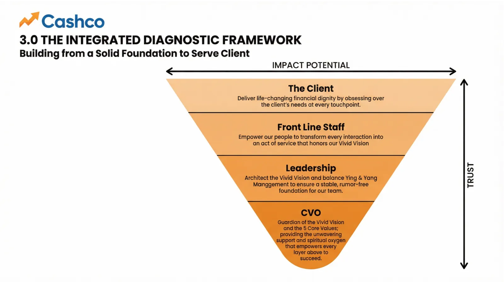

The Doctrine
The rules engine of the HB1000 Operating System, rendered as a readable manifesto. Every line below is doctrine, not decoration — each section is enforceable behaviour somewhere in this app. Sources: the Mr & Mrs Fix-It OS dossier, the AI Research Protocol + Ledger, the Standing Orders vault, and the GitHub vault canon.
This document sets out the rules engine of the HB1000 Operating System. Every provision below is binding doctrine rather than commentary; each section corresponds to enforceable behaviour elsewhere in this application. Source instruments: the Mr & Mrs Fix-It OS dossier, the AI Research Protocol and Ledger, the Standing Orders vault, and the GitHub vault canon.
The agents bring the intelligence. The HB1000 brings the brilliance.
Division of responsibility, stated formally: the agent fleet supplies analytical and executional capacity; the human principal supplies judgment, vision, and final authority. Operating maxim, verbatim: “The agents bring the intelligence. The HB1000 brings the brilliance.”
Every HB1000 gets a tireless AI Fix-It Crew that works inside their authority lane, does the heavy lifting, checks back when human brilliance is needed, and stays with the problem until it is fixed.
1 · The 80/20 Rule
Research, source review, drafting, analysis, data cleaning, script preparation, report repair, schema generation, benchmark comparison, model second opinions, progress monitoring, receipt generation, and learning capture.
Sets the vivid vision, declares the purpose in eight words or less, protects core values, defines destiny, supplies local context, approves sensitive gates, judges relationship impact, authorizes external actions, and signs off on completion.
Let the agents swing the hammers. The HB1000 holds the blueprint.
Execution is delegated to the agent fleet; architectural control and accountability remain with the human principal. Operating maxim, verbatim: “Let the agents swing the hammers. The HB1000 holds the blueprint.”
In the Dingo Card model, every activity square carries a human/agent 80/20 slider — the rule is a UI element, not just prose. The covenant: if the human share creeps over 20%, the bar turns red and the Council triages.
Live demo of the shared split-bar component at the default 20% Caller share. Cyan = AI agents, gold = human. Computed, never asserted.
2 · Authority Lanes + out-of-lane suggestions
Brilliance can suggest anywhere. Authority can dispatch only in-lane.
- Every HB1000 can spot a problem. Not every HB1000 can dispatch agents everywhere.
- If an HB1000 sees a problem outside their role, the system creates a Fix-It Suggestion and routes it to the responsible HB1000. "This protects the organization from accidental overreach while still using the full brilliance of the HB1000 network."
- The role-scope check is Step 2 of the workflow, before anything else happens: in-lane → create a Fix-It Ticket; out-of-lane → create a Fix-It Suggestion routed to the lane owner.
- Authority status on every ticket:
in_lane·suggestion_only·admin_review. - The Prime HB1000 sees across all lanes and resolves routing conflicts. Business-unit HB1000s dispatch only within their lane (examples: Pawn Princess HB1000, Kokanee Occupancy HB1000, BAFG Communications HB1000, Reports & Data HB1000, AgNotice HB1000, Culture Chaser HB1000).
- Fix-It Crew Agents "do the work but cannot exceed the authority granted in the work order."
- Named political failure mode: "HB1000 suggestions feel like interference" → control = a suggestion queue with owner approval. The lane owner accepts or declines suggestions; they are never auto-dispatched.
{
"purpose_8_words_or_less": "…",
"destiny_statement": "…",
"core_values": ["…"],
"can_dispatch_agents_for": ["…"],
"can_suggest_to": ["…"],
"approval_limits": {
"external_messages": "…",
"customer_contact": "…",
"spend": "…",
"legal_claims": "…",
"production_changes": "…"
},
"check_in_preference":
"blocker_only | daily | twice_daily | weekly"
}From the dossier §5.1 hb1000_profile — reused verbatim across the OS.
3 · The Two-Shop Test
"Like taking a car to Canadian Tire and a trusted local garage." The Two-Shop Test compares:
- where both assessments agree
- where they disagree
- what assumptions each made
- what risk each sees
- what specialist crew each recommends
- what repair path the HB1000 should approve
Model-agnostic pairings: ChatGPT + Claude, Claude + Gemini, Gemini + Grok, internal agent + external model, or two specialist agents in the same model environment. "The key is independence, not a fixed model brand."
"two_shop_test": {
"required": true,
"shop_a_model": "…",
"shop_a_diagnosis": "…",
"shop_b_model": "…",
"shop_b_diagnosis": "…",
"agreement": ["…"],
"disagreement": ["…"],
"recommended_repair_path": "…"
}Behavioural rule: when two_shop_test.required, the disagreement analysis is shown to the human
before the Approve Dispatch button enables.
4 · Fix-It Receipts + the Learning Ledger
Before, AI Research found the answer. Now, Mr. & Mrs. Fix-It finds the fix, assigns the mechanic, tracks the repair, and leaves a receipt.
- Every completed job produces a receipt and updates the learning system. The receipt is the last two workflow steps: Step 11 Fix-It Receipt → Step 12 Learning Ledger ("the pattern is saved for reuse").
- A receipt proves what changed: deliverables, counts, compliance, and the learning captured. Real example (Pawn Princess): "43 prospects identified, 18 qualified, 12 conversations booked, 10 completed, 3 converted, no unapproved claims, learning captured: plain-language dignity frame outperformed technical loan language."
- Every ticket carries
receipt_required: trueand a score block{before, current, after, delta}— the score delta is part of the receipt. - The learning ledger is append-only and doubles as the OS's memory. PII and financial data are redacted before any ledger write.
- The signed receipt already exists in working code: ticket → agent loop → approval gate → signed receipt (SHA256) → append-only ledger is the live loop in Mr & Mrs Fix-It. See it on the Agent Fleet page.
- Vault-First mantra: "If it is not in the vault, it does not exist." Everything else is exhaust — it flows IN, not the other way around.
The supervision surface is the HB1000 Master Cockpit / Fix-It Mission Control — a car-dashboard interface:
One dashboard. Many gauges. Every gauge has a mechanic.
5 · The AI Research Protocol — the daily "Best Practice Junkie" scan
Learning-Loop-grade. Cadence: daily — the 6 AM "Morning AI Research" routine runs this protocol at Primal. Naming lock: it is AI Research — never the legacy term (see the locked vocabulary). The human is the governor: Approve / Modify / Decline are the only three verbs at a gate. Never auto-apply.
| Level | Push to | Use for |
|---|---|---|
| Loading data/ai-research-ledger.json… | ||
"Default intensity for our dogfood = PRIMAL."
Loading…
- A score and a baseline, not a vibe. ("40 → 51 → 78 / 100," not "a 10%er.")
- A clear reason it stopped (which of the three stop conditions fired).
- 1–4 candidate improvements, each PENDING human approval.
- Hunt for 1%; bank the occasional unicorn when the 1% hunt turns one up.
- Phase-0 gate — declare the Local North Star for this run (what are we improving, and how does it rhyme with the Prime). No North Star → halt.
- Define the metric + baseline — before optimizing (Standing Order #8). Score the current state /100 across a few named dimensions. "Without it, a '10% lift' means nothing."
- Run scored rounds — each round = a focused scan; measure each candidate's lift in points against the baseline.
- The diminishing-returns STOP rule — stop when any of the three stop conditions fires (see right).
- Curate + surface — present the scored candidates to the human-in-the-loop to approve / modify / decline. Never auto-apply.
- Log — append a dated, scored briefing to the AI Research Ledger. "Every output is a baseline, never final" (Standing Order #7).
Before any candidate is surfaced as worth approving, it must survive an external adversarial check — "so we never grade our own homework or believe our own press releases":
- External reality check — ground each claim in the outside world (real competitors, real tools, real market data). "If the market already does it better/cheaper, say so plainly."
- Red-team pass — a hostile skeptic (a dedicated red-team subagent prompted to refute) attacks each finding: "Where are we fooling ourselves? What would a competitor / auditor / skeptic say? What breaks at scale?" Default to refuted if uncertain.
- Verdict — every candidate carries an Adversary verdict: SURVIVES WEAKENED REFUTED. "Refuted ones are NOT presented as wins."
- (Future) External-model cross-check — flash each claim at an external model for a second, different-brain opinion.
The live ledger — the 2 real PRIMAL briefings
🔒 The briefings below are real ledger entries, transcribed verbatim from
AI-Research-Ledger.md into data/ai-research-ledger.json. The Approve / Modify / Decline buttons record a decision
to this browser only (localStorage) — nothing auto-applies, nothing auto-sends. Approval just unlocks a candidate; a human still does the move.
Loading the AI Research Ledger…
Every output is a baseline, never final.
6 · The Ship-It-Ugly / "used yesterday" gate
The #1 documented risk is not technical — it is the pattern: "the beautiful grid tempts you to perfect and decorate instead of operate. That's where the last 30 versions died."
Ship it ugly. Use it daily. Success = "the card was used yesterday" — NOT "the card is complete." One card, one Caller, used live for N consecutive days before any second card or any new feature is allowed.
"Build ONE Dingo Card on the app you already have (Mr & Mrs Fix-It), run it live on ONE real operation, ship it ugly in 2–4 weeks. The only success metric: 'was the card used yesterday?'"
"Hold the line. One card. One store. One resort. Used yesterday."
The success-metric widget is binary: used yesterday? — an N-consecutive-days counter gates "create second card / enable new feature."
"That rule isn't just project hygiene — it's the OS teaching you the very thing it's built to teach
everyone: sense of urgency over disciplined perfection."
Trust rule: the Source-of-Truth number behind any gauge "must be trusted and current — if the noon reconciliation is late or massaged,
the ticker lies and the Caller stops believing the OS within days."
7 · Safety & Human-in-the-Loop — the MAY / MAY-NOT table
- research
- draft
- compare
- clean
- score
- prepare
- analyze
- monitor
- report
- contact customers
- send external messages
- spend money
- make legal or financial claims
- change production systems
- file legal documents
- sign contracts
- publish allegations
- use sensitive personal information beyond the ticket scope
- act outside the HB1000's authority lane
The agent never sleeps, but it still stays inside the fence.
MVP exclusions (hard): no unsupervised external messaging, no spending, no legal filing, no production-system changes, no live customer contact, no hidden surveillance. Default external posture: draft-only by default, approval locks — e.g., the Seba pilot runs draft-only with a named human approving every message; Gmail is draft-only, Tim sends. Denied actions create an approval-gate item; they never silently execute.
The read-only financial stance + the Z-report rule
- Read-only / least-privilege access to financial systems (Bravo POS + bank). "The agent never writes to the POS."
- PII / financial data redacted in the learning ledger (reference:
cashout/redaction.py— buckets dollar figures before logging). - Just-in-time, task-scoped credentials.
- Read-only by construction: financial adapters expose no write methods, and carry a "never trigger source-system state changes" flag.
- Cheap-correctness principle (Briefing #2, SURVIVES): don't rebuild the general ledger — reconcile against the source system's own computed number and have the agent explain the variance.
Consume the existing Z-report, never regenerate it — "running Z again resets the counters and destroys the audit trail."
Generalized: agents consume existing system-of-record artifacts read-only; they never trigger state-changing operations on the source system.
8 · The 12-step workflow — the doctrine as a state machine
Ticket status machine: draft | diagnosing | ready_to_dispatch | running | blocked | ready_for_review | complete ·
Evidence budget scale on every ticket: low | medium | high | high_stakes. Gold-ringed steps are gates.
9 · The 10 Standing Orders + the 12 Constitutional Rules
Binding on every agent (Elder, worker, Wisdom Giant) operating in the OS. Loaded verbatim from data/standing-orders.json.
Loading Standing Orders…
Transparency-is-Kindness addendum
Loading…
10 · The Council of Elders — 9 Elders, NSA cross-cutting, 10th seat reserved
Loading the Council roster…

11 · The three scorecards (exact weights)
| HB1000 / Vivid Vision alignment | 12 |
| Evidence and grounding | 12 |
| Two-Shop diagnostic agreement | 10 |
| Agent match quality | 10 |
| Role-scope / authority compliance | 10 |
| Babel landing / communication clarity | 10 |
| Risk and privacy control | 10 |
| Execution readiness / DINGO clarity | 10 |
| Completion proof / receipt quality | 8 |
| Learning ledger / reusable pattern | 8 |
| Total (computed) | … |
| Vivid Vision clarity | 15 |
| Purpose ≤8 words | 10 |
| Core values protected | 15 |
| Beneficiary clear | 15 |
| Agent work properly scoped | 10 |
| Human approval gates clear | 10 |
| Definition of done clear | 10 |
| Learning captured | 10 |
| Check-in rhythm set | 5 |
| Total (computed) | … |
| Correct agent matched | 15 |
| Work order clarity | 15 |
| Autonomy used safely | 10 |
| Human approval gates respected | 10 |
| Deliverable completed | 20 |
| Risk reduced | 10 |
| Score improved | 10 |
| Learning captured | 10 |
| Total (computed) | … |
12 · The locked vocabulary — use exactly; never the legacy term
| Canonical (use this) | NEVER (forbidden) | Note |
|---|---|---|
| DINGO = Do It Now, Go | Bingo | total find-and-replace; "Disciplined Execution + Sense of Urgency" survives as philosophy only |
| The HB1000 Operating System | Hard Hat Tour / Constellation Tour | tagline: "Human Brilliance + AI, in service of Social Impact Capitalism" |
| Dingo City / Dingo card / Dingo squares (D1…D25) | Bingo City / Bingo card | 5×5 = 25 activity squares |
| Dingo Caller (c-a-l-l-e-r) | collar | "the one neck to choke" |
| PTK — Promises to Keep | "free square" | the AI promise engine at centre (grid index 12) |
| Prime North Star (1) / Local North Stars (many) | "North Star = Ruby Red" | Ruby Red = one Local (Maven / Corner Banker / Pulse only) |
| Council of Elders — 9 Elders | Rooftop Society / "8 Elders" | NSA holds the 9th seat; 10th reserved |
| Twin North Star Gate | Vivid-Vision Gate | hard halt, never a warning |
| AI Research | auto-research / autosearch / AutoSearch | the daily 6 AM scan; naming lock |
| the 2D and 3D model views | "Pearl('s) brain" | |
| Learning Loop Protocol V13.0 — The Genie Release | V8–V12.9.1 (archive), V14 behaviors | V14 schema = data-model donor only |
| Voice = KIE.ai ONLY | ElevenLabs | Standing Order #1 |
| Local 4 — Imperative | Local 3 | |
| BHAG = 3–5 year, numbers in the sentence | 1–2 yr / 10–30 yr variants | NSA Rhyme Test standard |
| Seba Hub | SIBA | |
| JTBD IS Clayton Christensen | "NOT Christensen" | the single most important Timmyisms correction |
| KEEP unchanged | — | JOY / JOY Substrate · Cloud Butterflies · Flypaper · Hunting Funnel · PEARL Diamond · Learning Loop · Blue Seal Prime/Local |
| Retired tagline | "Put the Cult in Culture" | do not use |
13 · From the white papers — LDP · glossary · deployments registry
The deepest single document in the predecessor estate is the 18-page white paper
(HB1000-Constellation-Tour/HB1000_White_Paper.pdf, April 4, 2026) that shipped with the model tour (legacy) package,
alongside its master briefing .md. Three of its layers are surfaced here, read-only, as lineage — where its
April-2026 vocabulary has since been locked otherwise, the locked vocabulary (§12) wins.
The Latimer Douglas Protocol (LDP) — the structural enforcement mechanism for SIC, in one paragraph
“The Latimer Douglas Protocol (LDP) is the structural enforcement mechanism for SIC. It includes a non-negotiable 10% tithe of top-line revenue back to community, a Blue Seal verified integrity marker for participating businesses, and a capital guarantee for entrepreneurs who operate within the protocol’s integrity standards. The LDP serves three pillars simultaneously: an Economic Floor for the working poor, a Moral Infrastructure for businesses, and a Civic Accountability layer for institutions.”
Verbatim from the white paper, p.2. The “10%” figure is restored from the archive inventory notes
(hb1000-os/hardhat-notes-saved.md) — the PDF’s embedded font drops digits under text extraction.
Spelling note: the white paper itself spells it “Latimer Douglas Protocol.”
Glossary of key terms — 24 of the 25 white-paper terms, verbatim
| Term | White-paper definition (verbatim) |
|---|---|
| SIC | Social Impact Capitalism — profit and purpose as force multipliers |
| HB1000 | Human Brilliance 1000 — the human mind partnered with AI |
| Ruby Red | The canonical North Star persona — working poor household CFO (locked vocabulary: she is a Local North Star, never the Prime) |
| DINGO Card | Project accountability dashboard with War Room and North Star badges |
| POPE | Person of Primary Engagement — the project lead |
| PTK | Promises to Keep — trackable moral commitments |
| LDP | Latimer Douglas Protocol — structural integrity framework |
| Blue Seal | Verified integrity marker for LDP-compliant businesses |
| PFE | Persistent Foraging Engine — background question harvester |
| Move 37 | Innovation scanner for orphaned solutions from other industries |
| Cloud Butterfly | An unconscious insight captured for processing |
| Trojan Horse | Embedded test to validate AI ethical reasoning |
| Séance Board | Grace’s primary interface — Zero Forms ritual space |
| Iron Brief | Core enforcement standard for all AI agents |
| The Watchman | Independent audit skill preventing drift |
| Race | Structured evaluation event with expert panel |
| North Star Proxy Test | “Would Ruby Red understand why this matters to her?” |
| Grace Godmother | Executive layer managing all Project Graces |
| Pearl | The Mother of All Graces — portfolio-level AI guardian |
| Vault | The GitHub repository — single source of truth |
| Format Gate | Schema enforcement layer blocking non-compliant commits |
| Wisdom Giants | Elders providing crystallized intelligence via voice/video |
| Honeybee Zone | Optimal SIC Matrix position — high profit AND high purpose |
| Nano Banana | Visual asset generation tool for emotionally resonant imagery |
Verbatim from the white paper, pp.17–18. One term is omitted under the locked vocabulary (§12): the white paper defined the predecessor card format under the forbidden legacy B-word; its successor on every surface of this app is the Dingo card. Digits lost to the PDF’s font subsetting (HB1000, Move 37) are restored from the archive inventory notes — nothing else was altered.
Deployments registry — the 8 sites the white paper recorded as deployed (April 4, 2026)
| Site | URL (recorded April 2026) | Purpose |
|---|---|---|
| DINGO Card Dashboard | dingocard-8wvtkcrz.manus.space | Project accountability |
| Ruby Red Dash | rubyredash-fdfpve3x.manus.space | Maven Grace app |
| Grace Ops V9.0 | graceprotocol-mc85vytk.manus.space | Grace operations PWA |
| PTK Alberta | ptkalberta-bhzfppj5.manus.space | Civic accountability |
| Destiny Dashboard | destinydash-64k7khzp.manus.space | Ruby Red dashboard |
| Pearl Dashboard | pearldash-4zl4u7rm.manus.space | PEARL Diamond KPI view |
| Pearl Map | pearlmap-zjgmggcg.manus.space | 3D spatial memory map |
| Intelligence Revolution | intrevoul.manus.space | Philosophical manifesto |
tour-archive/), we never make a platform we can’t back up the system of record.URLs restored digit-perfect from the archive inventory notes (hb1000-os/hardhat-notes-saved.md);
the PDF’s embedded font drops digits under text extraction. The frozen external face itself stays at
learning-loop.manus.space.
Doctrine sources: mr_mrs_fixit_os_dossier_whitepaper.md (v1.0 prototype doctrine) ·
AI-Research-Protocol.md + AI-Research-Ledger.md (the protocol running) ·
CashOut-Assignment-Agent-Spec.md (doctrine applied to a real money agent) ·
Personal_AI_OS_Vault/08_STANDING_ORDERS/STANDING_ORDERS.md · HB1000-OS-Synthesis-and-MVP.md ·
the GitHub vault canon (github.com/timjlatimer/personal-ai-os-vault). "If it is not in the vault, it does not exist."